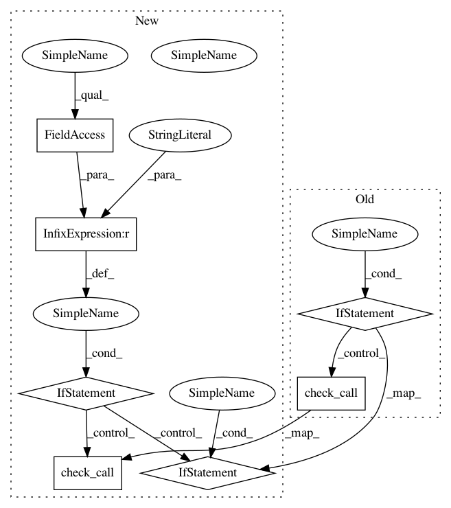

d6f84bb0721516184b596b4281c2d31355a48dbf,python/ray/setup-dev.py,,do_link,#,12
Before Change
package_home, local_home),
default=True):
return
if os.access(os.path.dirname(package_home), os.W_OK):
subprocess.check_call(["rm", "-rf", package_home])
subprocess.check_call(["ln", "-s", local_home, package_home])
else:
print("You don"t have write permission to {}, using sudo:".format(
package_home))
subprocess.check_call(["sudo", "rm", "-rf", package_home])
subprocess.check_call(["sudo", "ln", "-s", local_home, package_home])
if __name__ == "__main__":
parser = argparse.ArgumentParser(
formatter_class=argparse.RawDescriptionHelpFormatter,
description="Setup dev.")
After Change
default=True):
return
// Windows: Create directory junction.
if os.name == "nt":
try:
shutil.rmtree(package_home)
except FileNotFoundError:
pass
except OSError:
os.remove(package_home)
subprocess.check_call(
["mklink", "/J", package_home, local_home], shell=True)
// Posix: Use `ln -s` to create softlink.
else:
sudo = []
if not os.access(os.path.dirname(package_home), os.W_OK):
print("You don"t have write permission to {}, using sudo:".format(
package_home))
sudo = ["sudo"]
subprocess.check_call(sudo + ["rm", "-rf", package_home])
subprocess.check_call(sudo + ["ln", "-s", local_home, package_home])
if __name__ == "__main__":
parser = argparse.ArgumentParser(
formatter_class=argparse.RawDescriptionHelpFormatter,
description="Setup dev.")
In pattern: SUPERPATTERN
Frequency: 3
Non-data size: 7
Instances
Project Name: ray-project/ray
Commit Name: d6f84bb0721516184b596b4281c2d31355a48dbf
Time: 2020-06-27
Author: sven@anyscale.io
File Name: python/ray/setup-dev.py
Class Name:
Method Name: do_link
Project Name: ray-project/ray
Commit Name: d6f84bb0721516184b596b4281c2d31355a48dbf
Time: 2020-06-27
Author: sven@anyscale.io
File Name: python/ray/setup-dev.py
Class Name:
Method Name: do_link